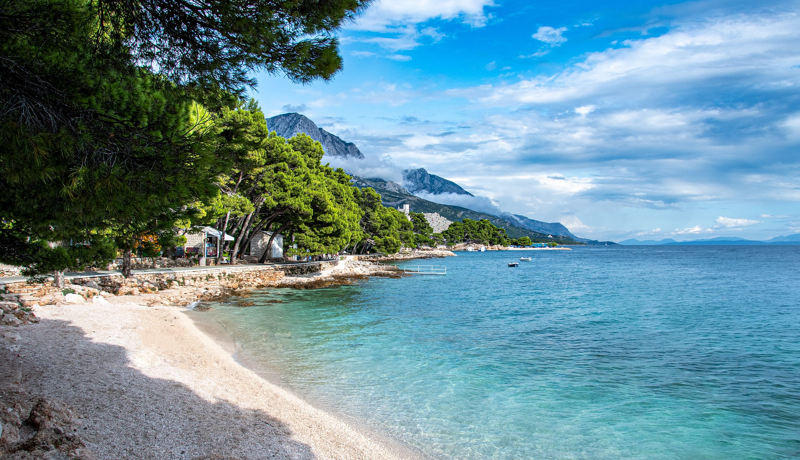
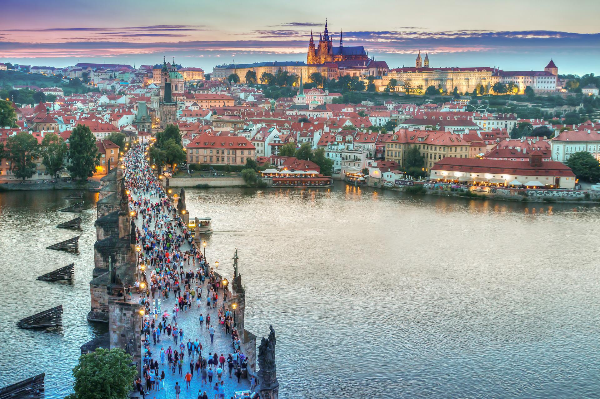

Beach Destinations
Croatia
With over 1,000 kilometres of coastline, it is no wonder that there’s many, many beaches in Croatia! In fact, one of the wonderful things about the coastline is that almost any little space alongside the sea is suitable for bathing, swimming and relaxing on, no matter how small. Some of the beauty of Croatia’s beaches can also be found in their surroundings – adjacent to crops of trees or vegetation, close to picturesque harbours, or overlooked by stunning scenery means being on a Croatian beach is a great experience! Click here for more information
Maldives

Maldives, officially the Republic of Maldives, is an archipelagic country in the Indian subcontinent of Asia, situated in the Indian Ocean. It lies southwest of Sri Lanka and India, about 750 kilometres (470 miles; 400 nautical miles) from the Asian continent's mainland. The chain of 26 atolls stretches from Ihavandhippolhu Atoll in the north to Addu Atoll in the south (across the Equator).Click here for more information
City Breaks
New York
New York, often called New York City (NYC) to distinguish it from the state of New York, is the most populous city in the United States. With a 2020 population of 8,804,190 distributed over 300.46 square miles (778.2 km2), New York City is also the most densely populated major city in the United States. Located at the southern tip of the state of New York, the city is the center of the New York metropolitan area, the largest metropolitan area in the world by urban areaClick here for more information
Prague
Prague is the capital and largest city in the Czech Republic, the 13th largest city in the European Union and the historical capital of Bohemia. Situated on the Vltava river, Prague is home to about 1.3 million people, while its metropolitan area is estimated to have a population of 2.7 million. The city has a temperate oceanic climate, with relatively warm summers and chilly winters.Click here for more information